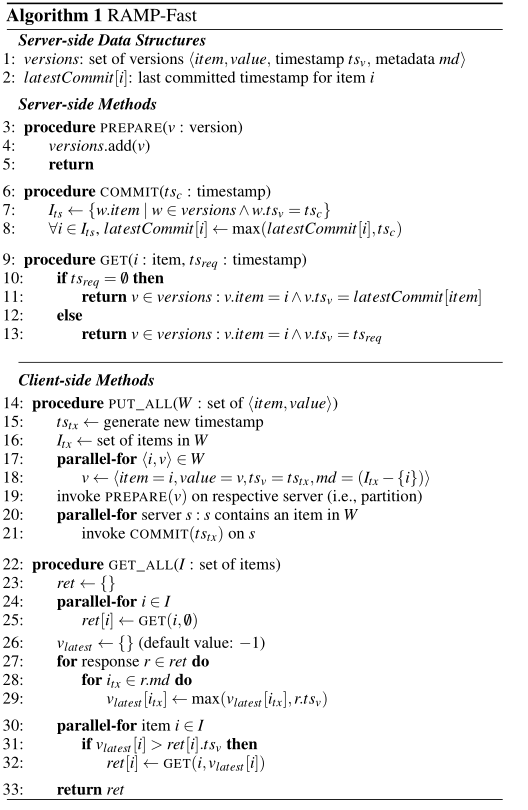
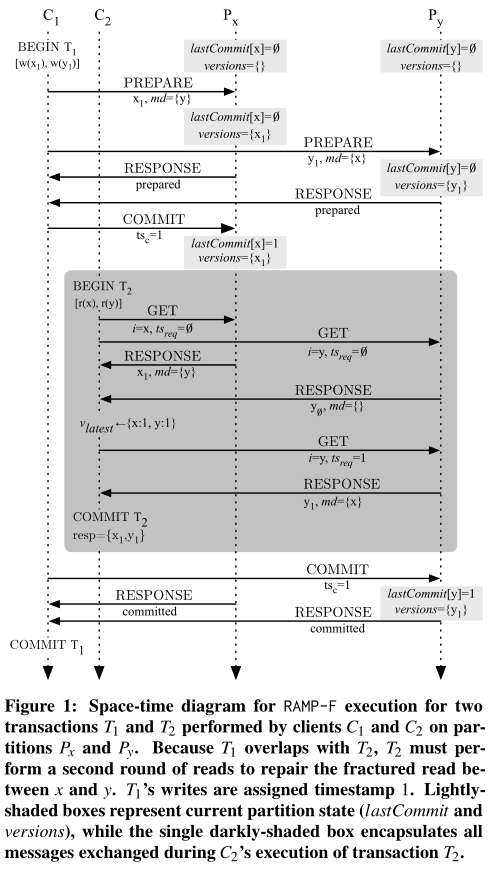
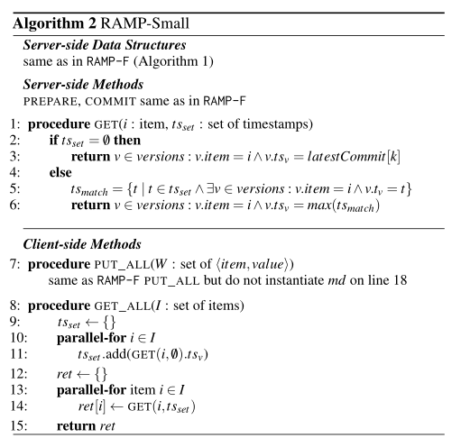
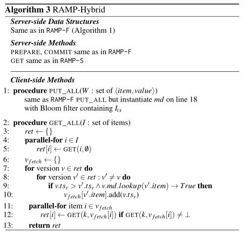
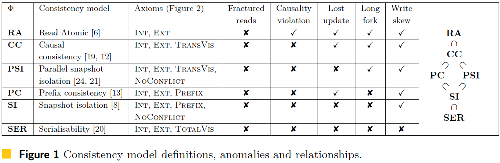
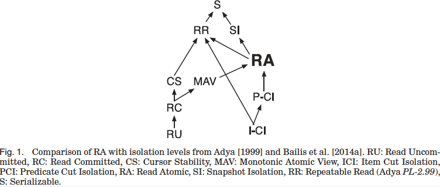
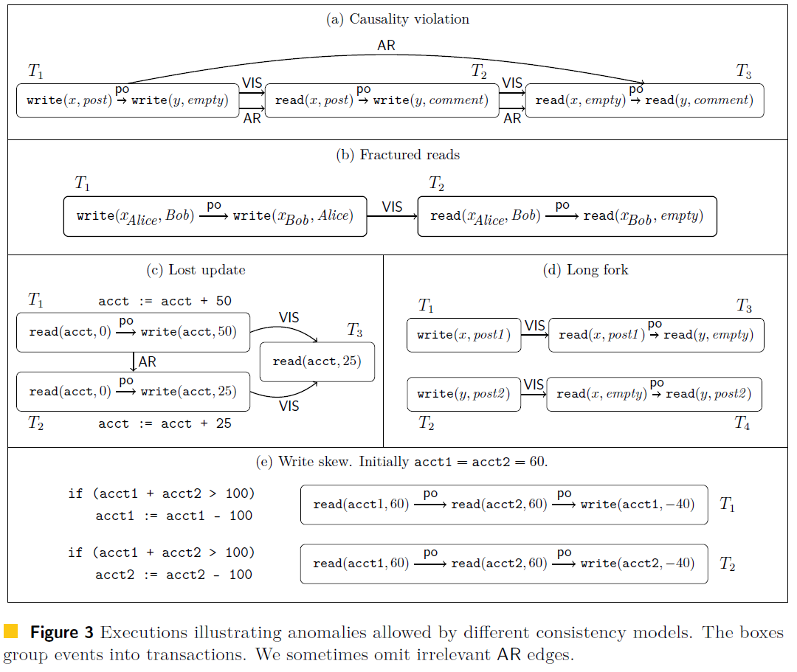

SIGMOD 2014 RAMP论文阅读
阅读Scalable Atomic Visibility with RAMP Transactions笔记。
RAMP
读半已提交数据异常
银行问题：两个分区A，B，分别有两个账户X和Y，X要向Y转账10元，此事务在A上完成提交，B上未完成提交，此时另一个事务要读X和Y，在A读到的为(X-10)的值，在B读到的是Y
如何解决
- 全局事务管理器架构：2pc
- 上锁机制实现全局可串行化
- 物理时钟，全序排序事务降低并发度,线性一致性
- 混合时间戳排序，局部偏序排序，因果一致性
- 当前论文的两次读机制
第一轮是RAMP发送读所有数据的请求并且进行读原子性检查，然后在第二轮读中，通过提取一些丢失的版本数据来修复这些读。
ACID中的Atomic，只能保证事务的操作要么全执行，要么全不执行，并不能保证读取时的状态一定是一致性状态。
论文贡献
RAMP（Read Atomic Multi-Partition）
定义了一个新的隔离级别原子读：即其他事务要么读到这个事务的所有更新，要么读不到该事务的任何更新。
提出了一种保证跨分区事务的原子读的算法
RAMP事务提供两个关键性保证：
- 保证同步独立性：一个客户端事务不会造成其他客户端事务的stall或者失败
- 保证分区独立性：只要事务不直接引用分区数据，就不会和其他分区有数据交换
RAMP事务可以自动检查是否存在非原子读，如果存在，会有第二次读取
写写冲突，后写胜利
如T1,T2,T3分别为写x=1,y=1，读x,y写z=1，读y,z，xyz分别在三个分区；T1此时x成功提交，y没成功提交，T2的z成功提交。那么此时，T1,T2,T3存在因果序。此时如果时RAMP-F，T2读的结果为x=1,y=1，T3读的结果为y=1,z=1。但如果是RAMP-S，T2读的结果为x=1,y=1，T3读的结果为y=0,z=1。
因果一致性读取无法保证，RAMP-S如何保证原子读，或者说这就叫原子读？
RA Isolation
RA只是对写可见性的限制，ACID中的原子性要求执行的事务要么全执行，要么全不执行；而RA只要求事务所有的更新要么全部对其他事务可见，要么全不对其他事务可见。
RA是一个相当弱的隔离级别，仅比读已提交高一点点。
RAMP事务算法
RAMP-F，不需要等待其他分区未到达的写，他保证了事务中只要有一个分区提交成功，别的分区一定会提交成功。所以可以直接去读取未提交的版本的时间戳。需要的metadata空间是和事务的写集成正比的，但是可以有更快的读。
RAMP-S，和RAMP-F不同的是在读取时，不需要由client判断是否是一致事务版本，而是由Server返回最新的版本，并且不需要在metadata中存写集的item。可以节省更多空间。
RAMP-H，在metadata空间不再存放写集item，而存放布隆过滤器判断item是否在事务写集中。读取时通过布隆过滤器来判断是否需要第二次RTT。空间和RTT的tradeoff
RAMP-Fast
一般情况下读需要一个RTT，写要两个RTT。
基本思路：通过写时记录相关写Item，然后在读时根据时间戳判断是否符合原子读。

写事务
14-21行是事务的写。事务写分为两个阶段，第一个为prepare阶段负责将数据写入对应分区versions保存，第二个为commit阶段，负责更新分区相关数据的最新写入时间戳lastCommit。如果事务commit失败的话，latest Commit时间戳和存储中对不上，就不会读这个数据
18行是在Value中加入数据的源信息及时间戳，源信息是当前事务涉及到的其他item写；4行是写入存储；7行代表该事务需要更新的所有item，通过时间戳来判断是否属于该事务；8行进行更新latest Commit，结束提交阶段。
读事务
25行ret[i] 为所有item的最近commit value ；27-28行为遍历读事务涉及到的数据，以及每个数据对应的事务的其他写，找出当前应该读到的最大时间戳
简单的例子就是，T1事务写x,y，T2事务读x,y。x在P~X~分区，y在P~y~分区，T1事务的x已提交，y未提交，T2事务就开始读了。这时有读x和y的请求，初始时读到的ret[x].ts~V~=V~latest~[x]=x1，ret[y].ts~V~=V~latest~[y]=$\emptyset$。经过这个for循环V~latest~[y]=x1，因为在找x的latest值时，会遍历当时写x的事务的其他写，并将V~latest~[y]更新。所以此时会进入到31-32，进行二次读。去读取符合版本的y值，以此达到避免读半更新的问题。也就是跨分区的原子读。

RAMP-Small
使用恒定大小的metadata，但是读需要2个RTT,写需要2个RTT。
基本思路：读时将事务涉及到的item时间戳全部验证，取出最新的作为结果。

写事务
和RAMP-F没区别，只是不存metadata
读事务
第一次RTT令ts~set~存放所有item的最新提交的时间戳，第二次RTT时，每次都会发送ts~set~的全部信息，以及对应item，在5行，将所有相关事务的时间戳给保存在ts~match~上，取出最大的作为读取值返回给ret
RAMP-Hybrid
基本思路：写时在value中维护布隆过滤器，表示是否存在某个item，读时进行判断，在布隆过滤器中则判断后再进行同步至最新一致性点
写事务
存布隆过滤器，判断某个item是否在这个事务写集即可，不需要像RAMP-F一样存写集。
读事务
第一次RTT令Ret存放所有item的最新提交的版本信息，然后进行原子性检查,判断当前读事务的其他读操作是否是同一个事务的，并且版本不同，如果未通过原子性检查，就进行第二轮RTT，否则不进行。

实验
分区，多版本，主存数据库，YCSB-A测试，默认一个事务4个操作
NWNR：无读写锁，作为实验baseline
LWLR：长读锁长写锁，提供可重复读隔离级别，也支持RA
LWNR：长写锁无读锁，提供读未提交隔离级别
LWSR：长写锁短读锁，提供读已提交隔离级别，不支持RA
E-PCI：Eiger system’s 2PC-PCI，虽然违反分区独立性，但不违反同步独立性，通过在client打时间戳来消除一个RTT
附录


